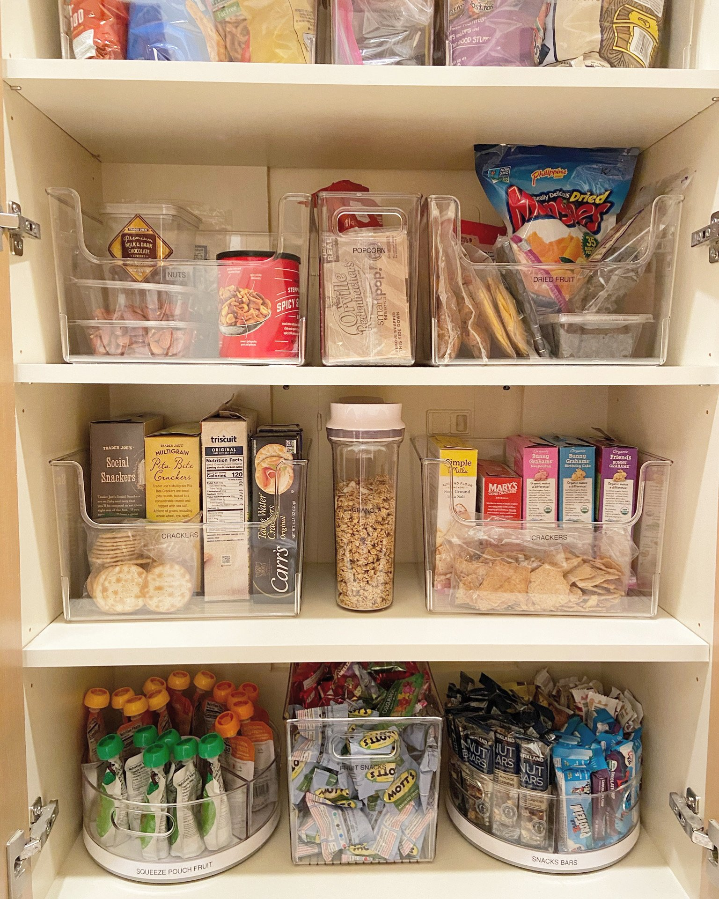
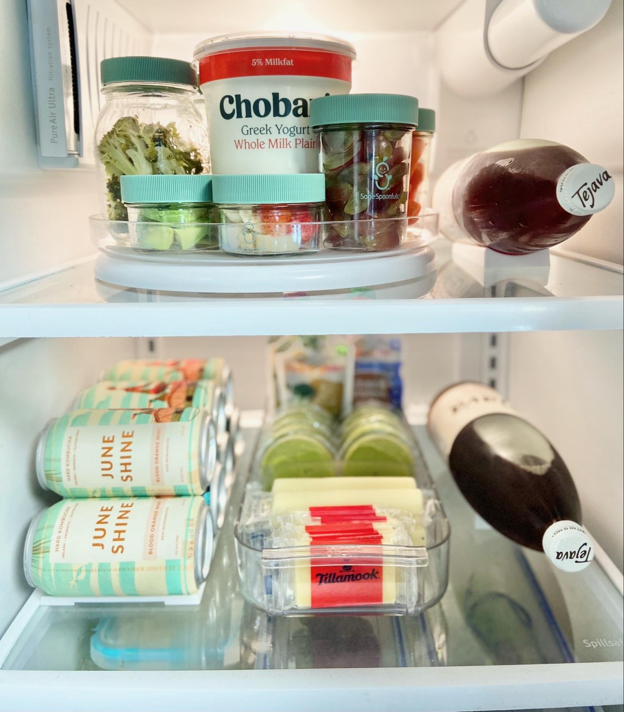

Mastering the Art of Kitchen Organization: A Step-by-Step Guide
A well-organized kitchen is the heart of any home. It not only enhances efficiency and productivity but also makes cooking an enjoyable experience. Organizing a kitchen may seem like a daunting task, but with a systematic approach and a little creativity, you can transform your chaotic cooking space into a haven of order and functionality. In this article, we will guide you through a step-by-step process to organize your kitchen and unlock its full potential.
Step 1: Assess and Declutter The first step in organizing any space is decluttering. Empty your cabinets, drawers, and countertops, and assess each item. Sort them into three categories: keep, donate/sell, and discard. Get rid of duplicate, broken, or unused items, and only keep what you genuinely need or love.
Step 2: Categorize and Sort Once you have decluttered, it's time to categorize your belongings. Group similar items together, such as utensils, pots and pans, baking supplies, and spices. This process helps you visualize the storage needs for each category and simplifies the organization process.

Step 3: Create Zones
To maximize efficiency, create dedicated zones within your kitchen. Designate areas for food prep, cooking, baking, and storage. Arrange your kitchen tools and equipment accordingly, ensuring that frequently used items are easily accessible. This logical arrangement streamlines your workflow and saves time.
Step 4: Optimize Cabinet and Drawer Space
Utilize the space in your cabinets and drawers effectively. Install adjustable shelves to accommodate items of different sizes. Utilize drawer dividers to keep utensils and small tools organized. Consider using vertical storage solutions like racks or hooks to maximize vertical space and store items like cutting boards and baking sheets.
Step 5: Maximize Pantry Storage Organizing your pantry is crucial for an efficient kitchen. Sort items by category and use clear containers or labeled jars for dry goods like pasta, rice, and spices. Utilize stackable storage solutions to make the most of vertical space. Arrange items based on their frequency of use, with frequently accessed items placed at eye level.
Step 6: Tidy Up Countertops Clear countertops not only create a clean aesthetic but also provide ample workspace. Keep only essential items, like everyday appliances, knife blocks, and frequently used ingredients, on your countertops. Utilize wall-mounted storage solutions, such as magnetic knife strips or hanging racks, to free up counter space.
Step 7: Enhance Accessibility Ensure that your most frequently used items are within easy reach. Store everyday dishes and glasses at arm's length. Install pull-out shelves or lazy susans in corner cabinets for easy access to items that would otherwise be challenging to reach. Consider utilizing drawer organizers or dividers to keep small items visible and easily accessible.

Step 8: Maintain Regular Maintenance
Organizing your kitchen is an ongoing process. Schedule regular maintenance sessions to reassess and reorganize your kitchen as needed. Make it a habit to clean and declutter your kitchen periodically to prevent clutter from piling up again.
Organizing a kitchen is an investment of time and effort that yields tremendous benefits. A well-organized kitchen promotes efficiency, saves time, and enhances the joy of cooking. By following the step-by-step process outlined in this blog, you can transform your kitchen into a space that reflects your personal style and makes your culinary adventures a breeze. So, roll up your sleeves, embrace the challenge, and embark on the journey to master the art of kitchen organization. Your future self will thank you for it!